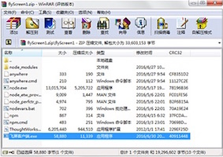
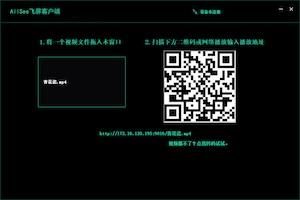
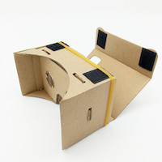

飞屏观看视频步骤
- 1. 下载飞屏PC客户端，下载地址{{feipingurl}}
- 2. 打开安装包运行飞屏客户端 
- 3. 将视频文件拖入飞屏窗口，如果有防火墙提示，点击允许
- 4. 用APP扫一扫飞屏客户端生成的二维码，或者在网络播放中输入飞屏客户端下方的网络地址 
- 5. 在手机APP上享受网络大片
-
6. MAC用户用如下方法观看电脑上的视频:
1）启动Web服务器，Finder-应用程序-实用工具-终端， 输入命令：sudo apachectl start，sudo表示用root权限运行，输入密码，输入时无提示， 输入完后回车确认即可。
2）按住Command+Shift+G，在前往文件夹中输入 /Library/WebServer/Documents，点击前往，将想看的电影文件拷入文件夹即可（如1.mp4）。
3）查看MAC本机IP地址，进入系统偏好设置－网络-高级-TCP/IP即可查看本机IP地址（如192.168.1.100）。
4）观看在APP的网络播放中输入链接地址，如http://192.168.1.100/1.mp4点击播放即可。
-
7. 注意:飞屏功能需确保PC地址的可达性
1）PC具有外网地址，任意手机均可使用飞屏功能播放视频。一般通过WiFi上网的PC不具有外网地址， 确认PC是否具有外网地址的方法:在百度中搜索IP地址，即可显示本机IP， 查看本机IP地址是否与网页显示的IP地址相同，相同即为具有外网地址。
2）PC不具有外网地址，这是多数情况，需确保PC和手机连接同一WiFi或者路由器。
3）不具有外网地址，能否让其他不在同一WiFi的人播放该视频呢？可以尝试下载Nat123， 将飞屏客户端显示的IP地址和端口转换成外网域名和端口，其他用户可以通过网络播放功能， 播放http://域名：端口/mp4文件的方法访问。

视频片源类型
- 1. 2D片源，即普通片源，通过一个相机制作完成，我们看到的大部分片源均为2D片源
- 2. 3D片源，片源使用两个相机拍摄制作，在PC上通过普通播放器看到左右两幅画面
- 3. VR片源，片源来自全景相机拍摄合成，在PC上通过普通播放器看起来有变形，尤其上下，是一个球形面展到矩形上而成
显示类型
- 1. 2D显示，即普通单屏显示，适用于直接观看
- 2. VR显示，将显示屏分为左右两屏，适用于VR眼镜或cardboard进行观看，可以体验立体或全景效果，体验与在电影院中看3D电影中类似 
- 3. 3D显示，适用于裸眼3D设备
片源类型与显示类型的关系
- 片源类型是固定的，理论上片源类型决定了对应的显示类型，只用用对应的显示类型才能达到正确的观看效果。本APP采用技术手段使片源可以用不同的显示类型来表现，即2D片源也可以看到3D立体效果，大大增加了可观看的3D视频数量。